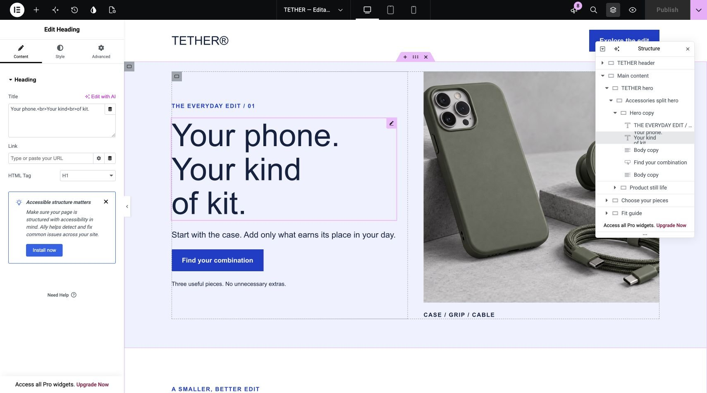
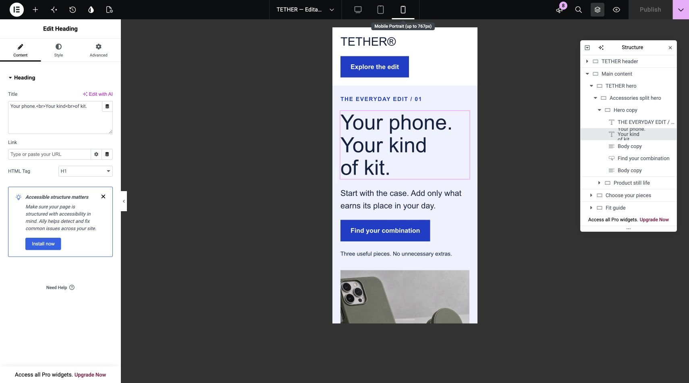

A SHORT, PRACTICAL HANDOFF
Open. Edit. Preview.
Both examples use Elementor Free widgets. The screenshots below show the actual editor used to verify the builds.
1. Open a page
Launch the sandbox from the portfolio. In WordPress, open Pages, find VALE or TETHER, then choose Edit with Elementor. The Structure panel contains named sections such as “Hero copy,” “Three product cards” and “Fit guide answers.”
2. Change the headline or copy
Click a heading in the preview. Edit its Title in the Content panel, keeping the main heading set to H1. Body copy uses the native Text Editor widget. Buttons have separate text and link fields.

3. Replace a product image
Select the Image widget, choose an image from the WordPress Media Library, and update its alt text. Match the original crop or adjust the widget’s image height and object-fit settings. The supplied photographs are fictional product images created for this portfolio.

4. Check tablet and mobile
Use the device controls at the top of Elementor. Review text size, line breaks, container direction and spacing at each breakpoint. Make device-specific changes with the responsive controls, then use Preview Changes to check the result outside the editor.

5. Publish and verify
Choose Publish or Update. Check section links, image loading, heading order and keyboard focus. On a real client site, take a backup and work on staging first.
Import into your own WordPress site
- Install the free Elementor plugin and the Hello Elementor theme.
- Download a template JSON or unzip the template package. In Elementor’s Saved Templates screen, choose Import Templates and select one JSON file.
- Create a new page, choose Elementor Canvas as its page layout, and insert the imported template. Keep the template’s own styling if the importer asks.
- Confirm imported images in the Media Library and their alt text. The package includes local copies if remote image retrieval is blocked.
- For the matching focus styles, skip link and paragraph reset, add the supplied
support/portfolio-support.phptowp-content/mu-plugins/on a demo site. No Elementor Pro subscription is required.
The support file hides the front-end admin toolbar for clean demonstrations. It does not alter WordPress permissions. Use only the portions appropriate to your own site.
Sandbox changes are personal to your browser. Export your work before closing or resetting the sandbox. They do not update the GitHub previews.